franciele domingues · 01
banho de gel
Reforço em gel sobre a unha natural, para quem quer unhas mais resistentes e com formato definido.
resistência · viseu
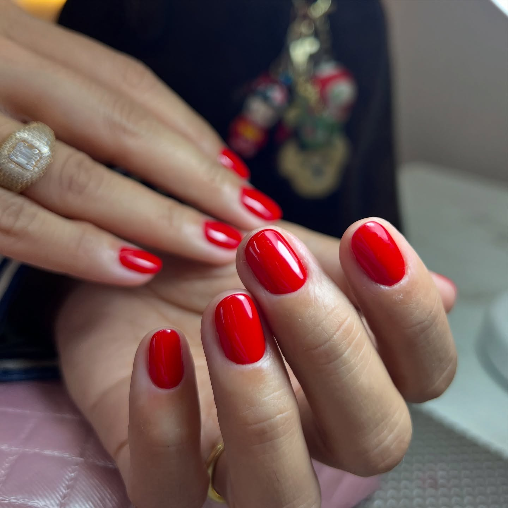
Banho de gel, verniz gel e alongamento com molde F1. Acabamento limpo, formato pensado para a sua mão e um atendimento sem pressa.
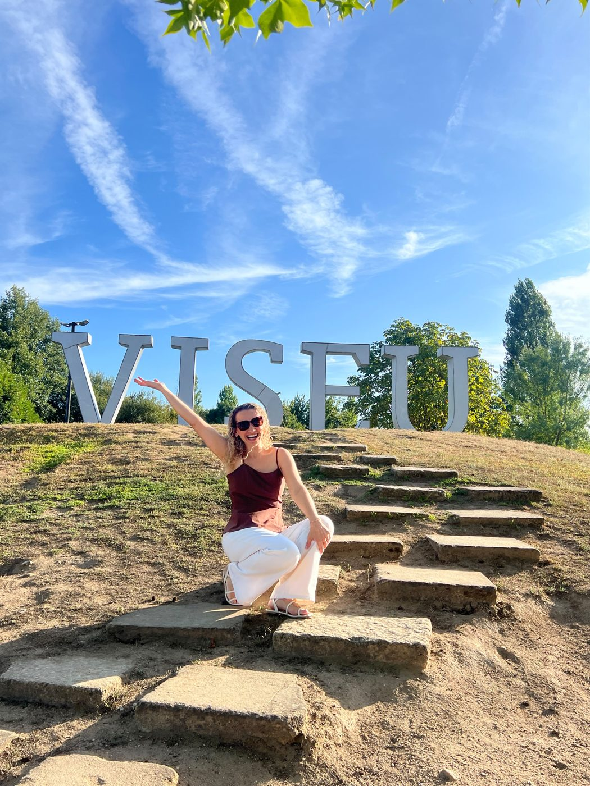
Trabalho com unhas há mais de 10 anos. Comecei no Brasil, passei por salões de beleza e de unhas em Maringá e hoje atendo em Viseu.
Tenho formação em alongamento com molde F1 e em verniz gel, e acredito que umas unhas bonitas começam numa boa preparação: cutícula bem tratada, formato certo para a sua mão e um acabamento que dura.
Na marcação ajudo a escolher a técnica certa para o seu tipo de unha e rotina.
Reforço em gel sobre a unha natural, para quem quer unhas mais resistentes e com formato definido.
Cor e brilho aplicados sobre a unha natural, pensados para se manterem bonitos durante semanas.
Extensão feita com molde F1 para um formato uniforme, curvatura natural e acabamento fino.

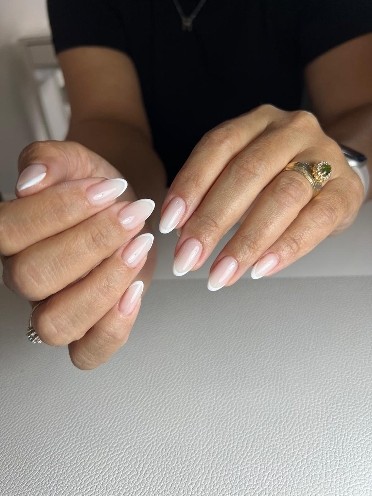
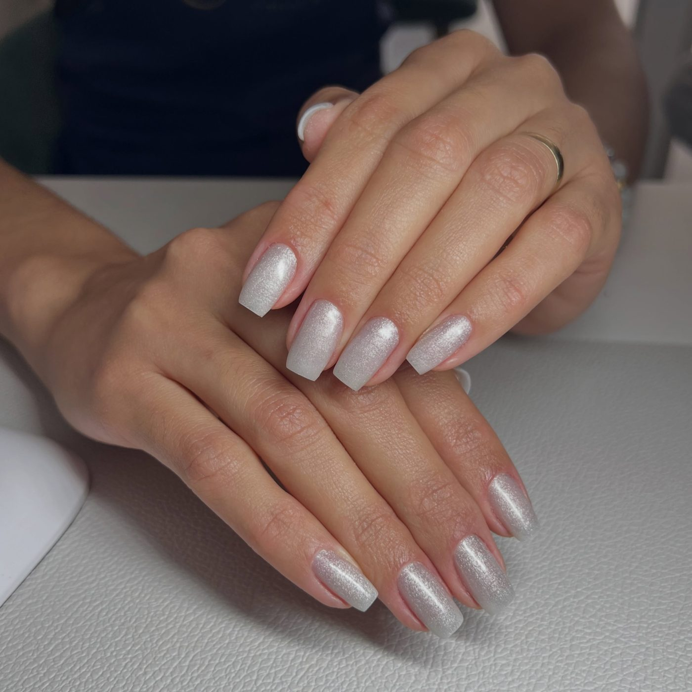
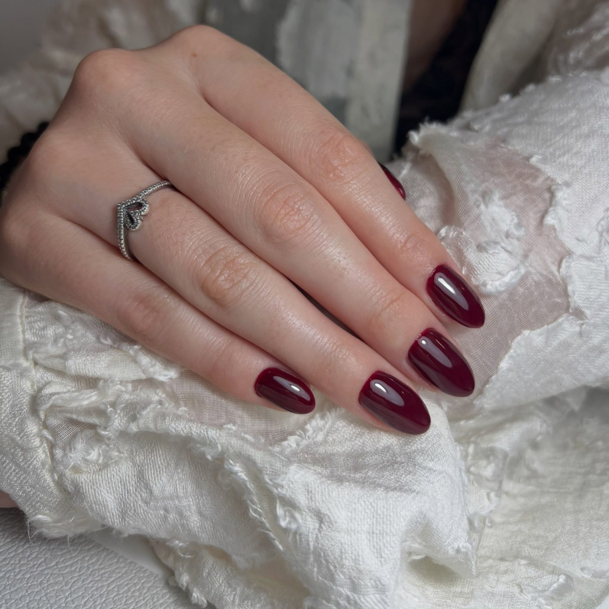

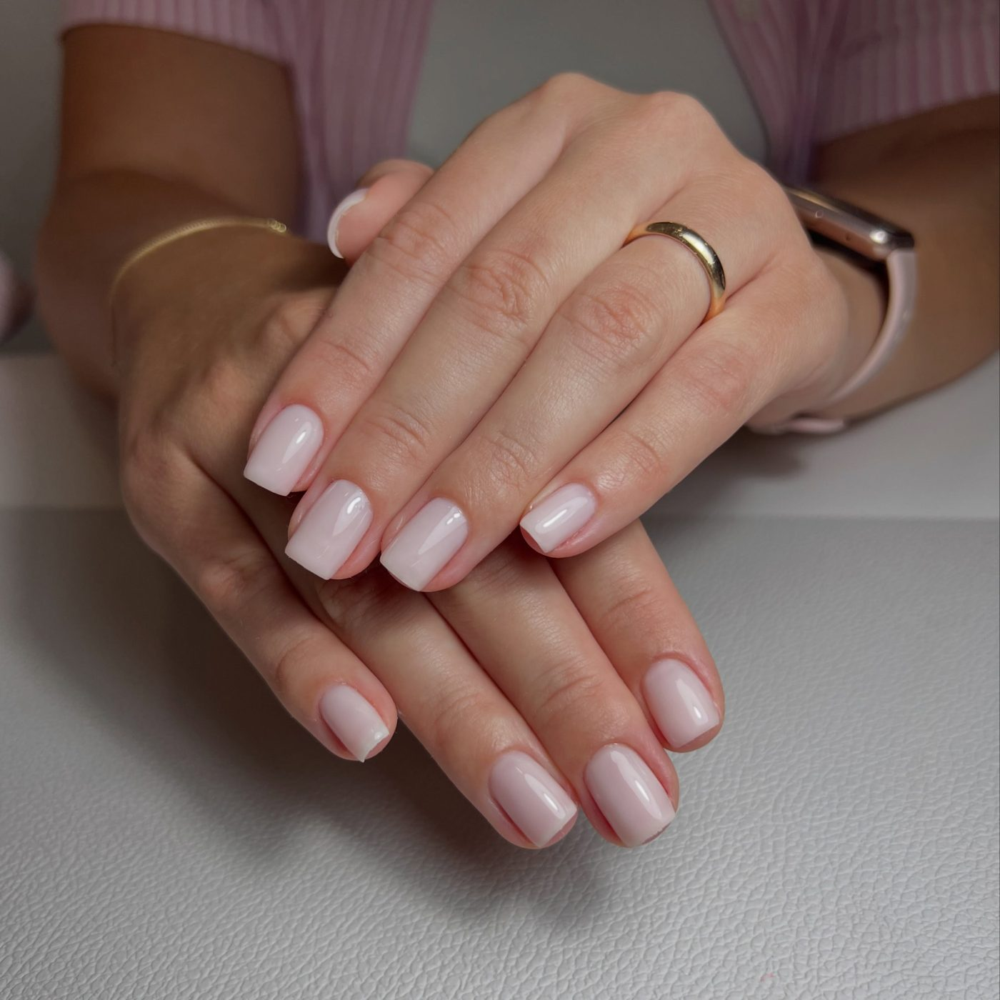

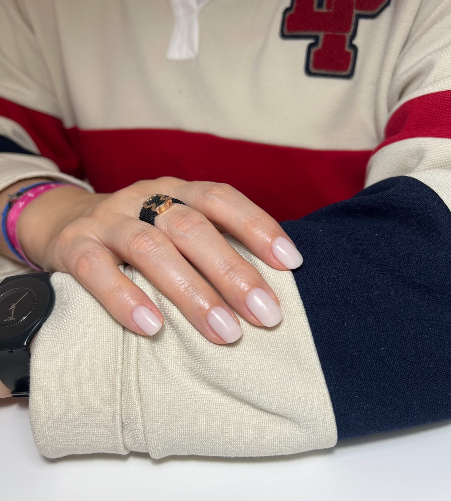
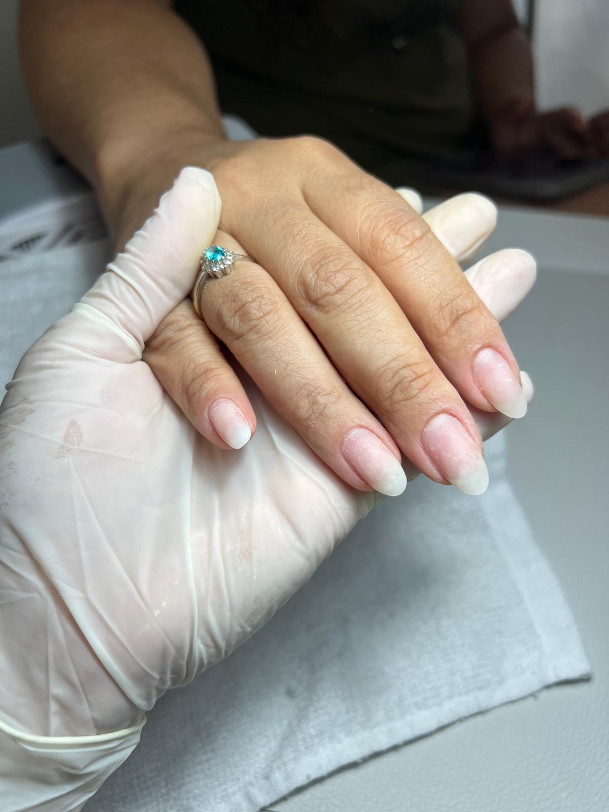
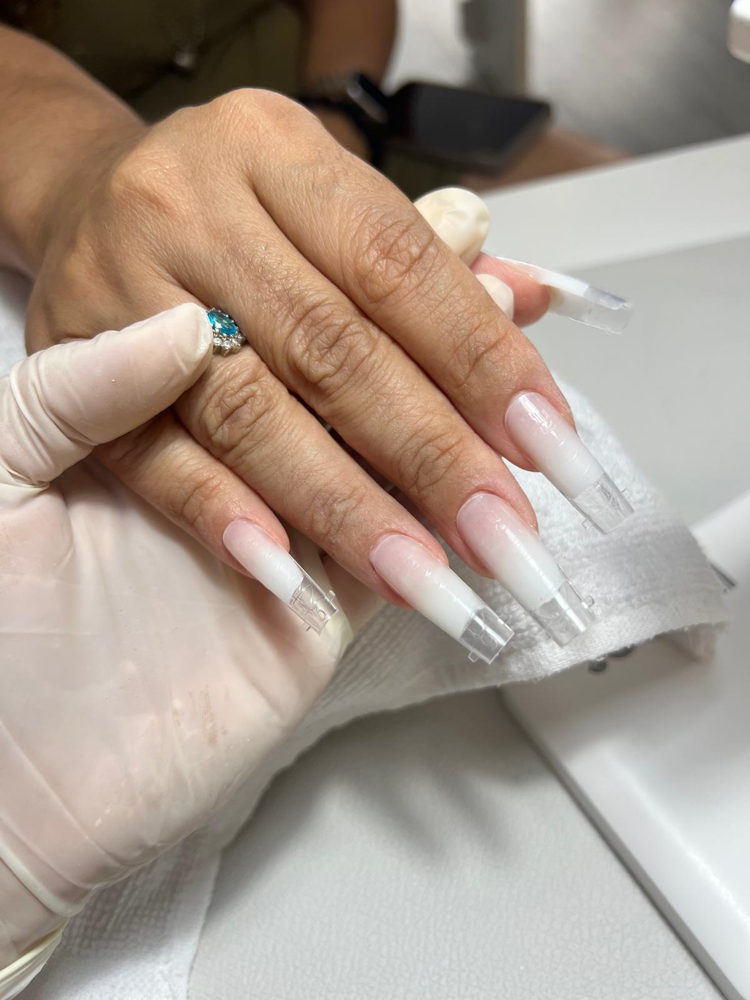
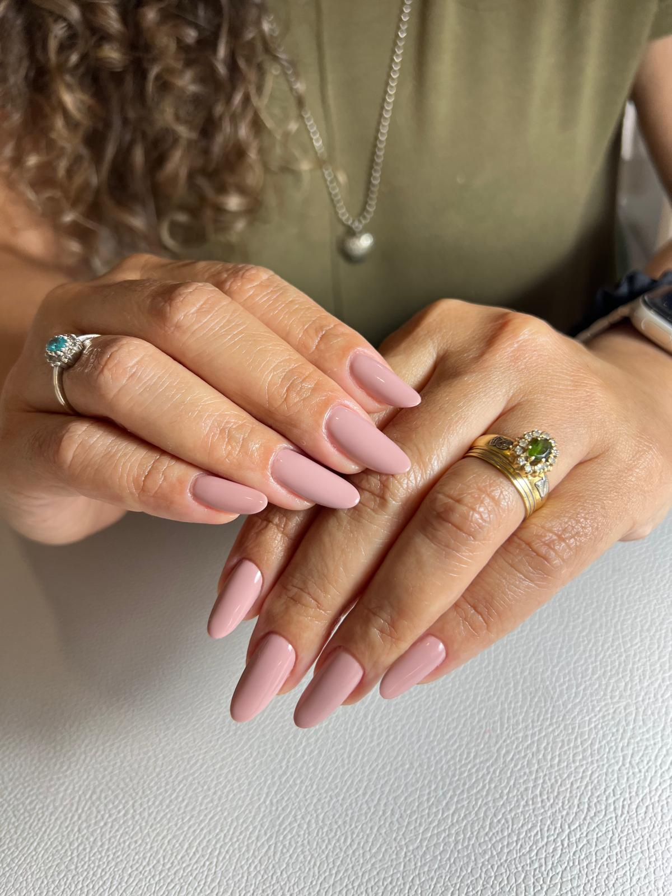
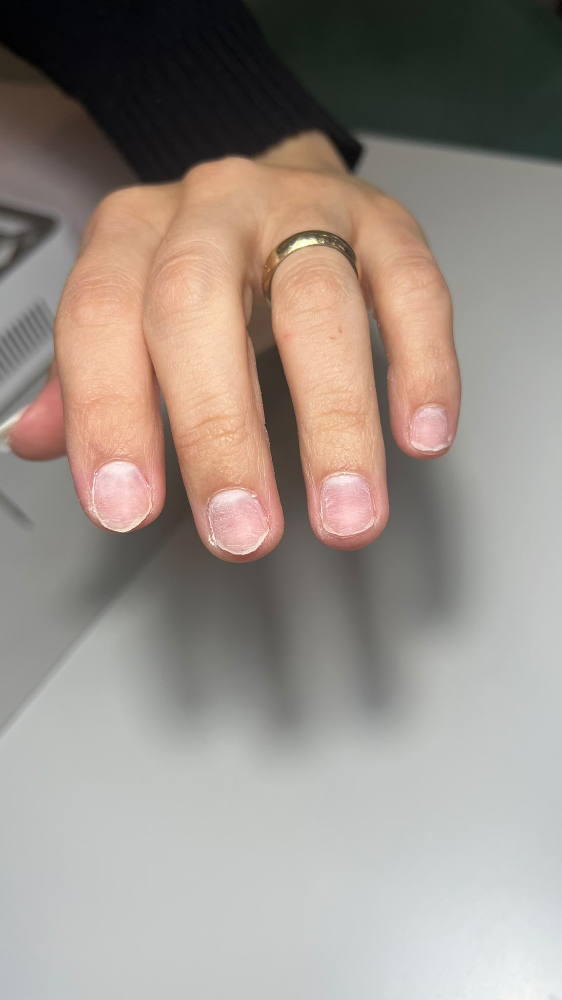
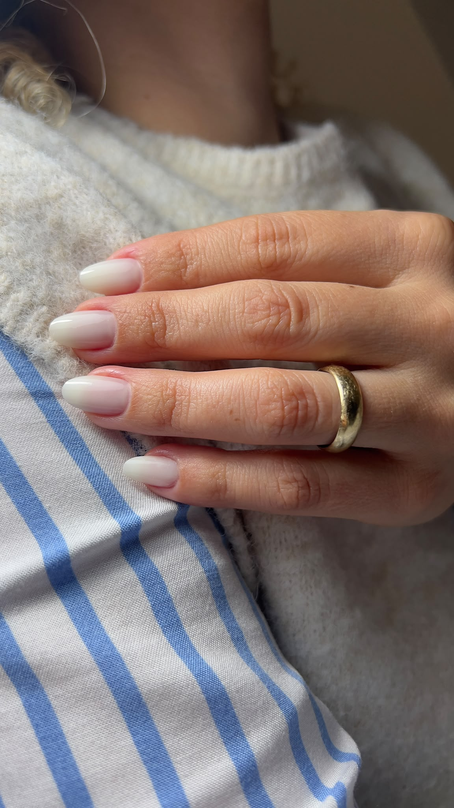
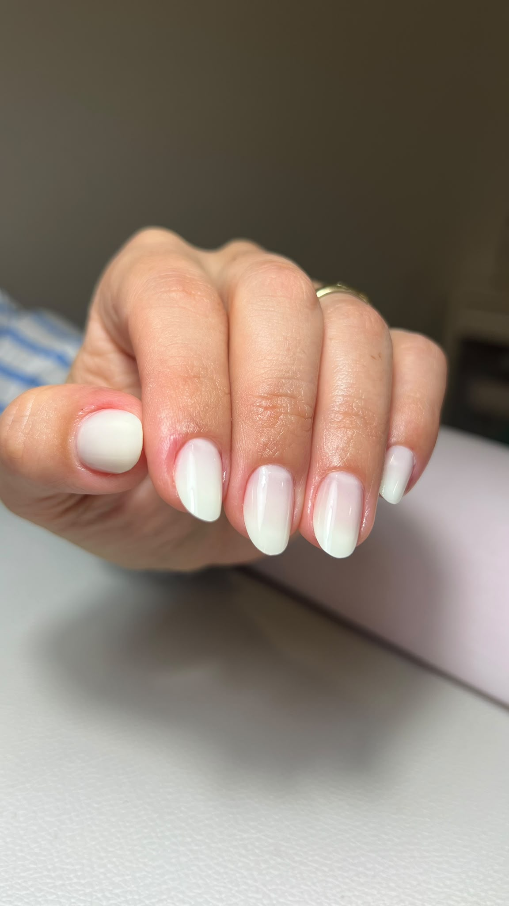
Pelo WhatsApp ou por chamada para o +351 927 933 572.
Diga a técnica e, se quiser, envie uma foto de referência.
A Fran confirma o horário conforme a disponibilidade da agenda.
Envie mensagem e combinamos o melhor dia conforme a agenda. Fico à sua espera.
+351 927 933 572 xoxo, fran